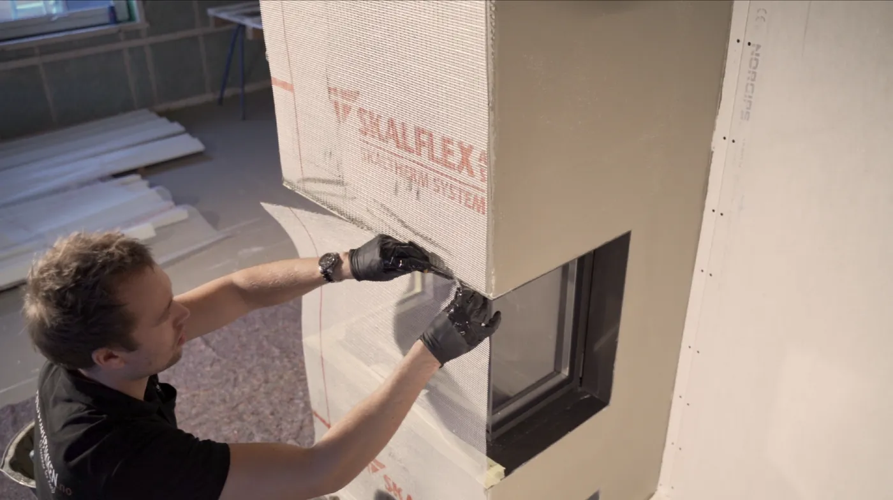

Forside/Piperehabilitering
Piperehabilitering
Vi rehabiliterer skorsteiner og fyringsanlegg – for bedre trekk, tettere pipe og tryggere fyring.
Pipe
Rehabilitering av pipe og skorstein
Alfa Varme og Pipeteknikk AS rehabiliterer skorsteiner og fyringsanlegg i hele prosessen.
- Vurdering av pipa.
- Tetting og foring.
- Bedre trekk.
- Dokumentasjon.

Praktisk
Slik gjør vi det
Vi starter med befaring og vurderer pipa før vi anbefaler tiltak.
| 1. Befaring | Pipe og fyringsanlegg vurderes. |
|---|---|
| 2. Tiltak | Foring, tetting eller utskifting. |
| 3. Utførelse | Arbeidet gjøres og dokumenteres. |
| 4. Kontroll | Trekk og sikkerhet kontrolleres. |
Er pipa klar for vinteren?
Ta kontakt for en vurdering.